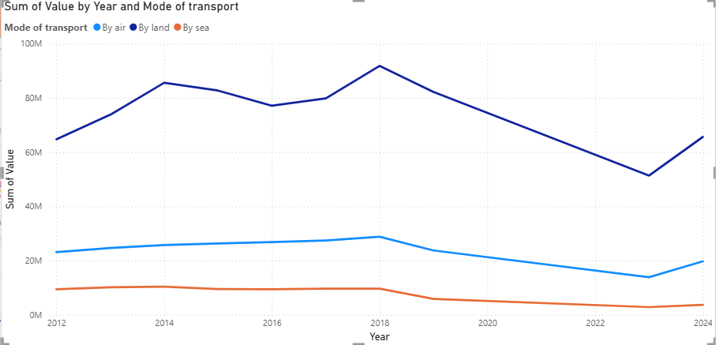
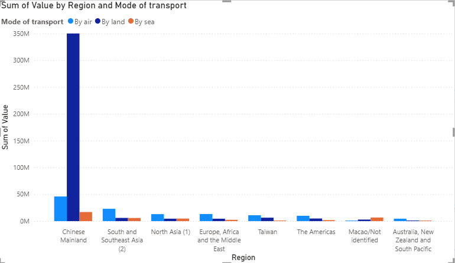
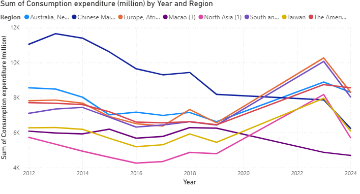

Weather, Region, and Visitors: A Multi-Dimensional Analysis of Hong Kong Visitor Trends
How do visitors travel to Hong Kong? This report examines visitor behavior, transport preferences, and spending patterns across source regions from 2012 to 2024.
To keep the trend interpretation consistent, the analysis excludes 2020, 2021, and 2022, and focuses on comparable pre- and post-disruption years to reveal longer-term shifts in Hong Kong visitor dynamics.
Key Trend
Yearly Transport Value by Mode
This trend highlights how total travel value changes over time across air, land, and sea transport.
The chart shows air travel as the dominant mode throughout the period, with land and sea contributing smaller but important shares.

Transport Mode Distribution
Compare the breakdown of travel by air, land, and sea across regions over time.

Key Finding: Air travel dominates in most developed nations, while land transport remains prevalent in nearby destinations.
Visitor Trends & Regional Analysis
Hover the map to view each region highlight and compare visitor patterns across source regions.
Travel Expenditure by Region
Track total spending and average expenditure per visitor across different geographical markets.

Visitor–Temperature Trend
Tourism peaks and valleys vary dramatically by region and climate. Some regions experience consistent travel year-round, while others show sharp seasonal spikes.
Observation: Northern destinations see summer surges, while tropical regions often peak during winter months.